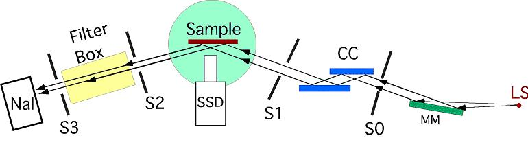

|

Schematic of the 18 kW setup.
Specifications:
- 18 kW RU 300 Rotoflex Rigaku Rotating Anode (purchased new by MRC in 1989)
- Mo Anode (also have choice of Cu, Cr, or Zr). Zr sputter deposited on Cr target
(5/07)
- Line Source (LS): Normal Line Focus 0.5mm x 10 mm, 18 kW max power
- The effective line width is 50 mm(?) due to the 6° take-off angle
- Operating power: 50 kV, 240 mA
-
Osmic Max-Flux Optic MF15NP-Mo (MM), followed by Huber 4-blade slit (S0)
-
graded d-spacing parabolic multilayer collimating mirror. dave= 33.04 Å
-
Transmits: Mo Kα1(0.70932 Å) + Kα2
(0.71361 Å), Kb/Ka ratio = 5.7x10-4
-
Flux = 3x108 p/s 0.3 mm x 4 mm slit, 10mm beam height at
sample
-
0.025�X divergence, qave = 0.62°, Dλ/λ = 0.04
-
(Optional) Si(111) channel-cut (CC)
2-bounce monochromator (also have choice of (220), (004), (333))
-
Transmits: Mo Kα1 (λ = 0.70932 Å, 10-eV-line-width-2 G->
Dλ/λ = 5.7x10-4) Flux = 2x107 p/s
-
0.001° divergence
-
Huber 4-blade incident beam slit (S1)
- 2-circle diffractometer (starting from the bottom to the top)
-
Newport translation
-
Huber 415 2-circle w/ 20:1 gear-reducers
-
Piezo Torsion-bearing ultra-fine w-rotation stage for single crystal XSW
-
Huber 1003 X-c-f goniometer
-
Sample holder
-
2-theta arm w/ guard slit (S2), XIA filter box, detector slit (S3),
Cyberstar NaI X-ray detector
-
Auxillary equipment:
-
Goniometer pin
-
X-ray Eye
-
High-power zoom lens camera
|